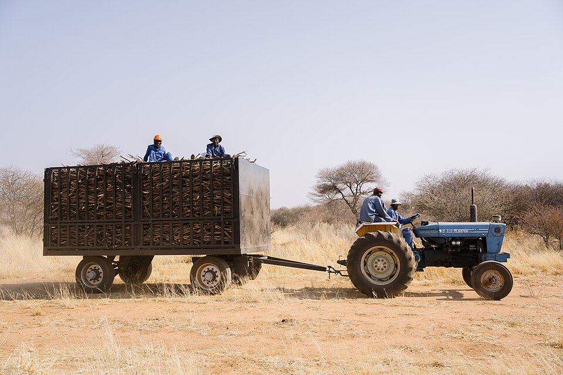
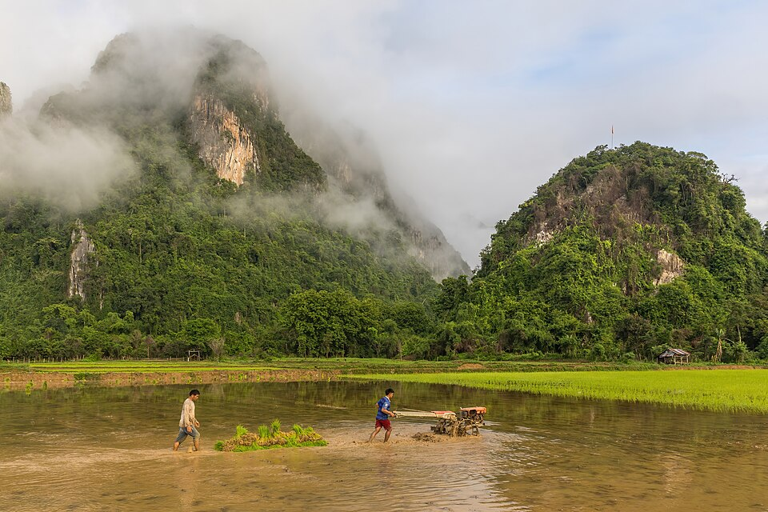
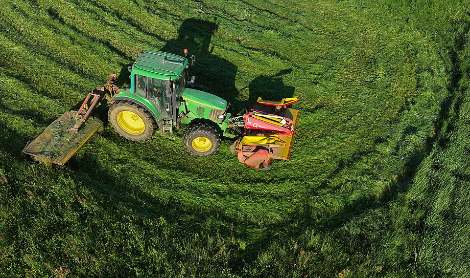
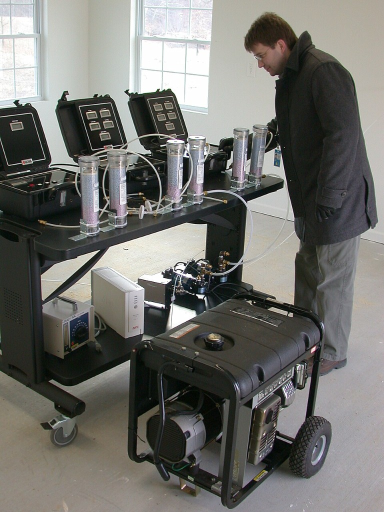

Find equipment
Browse farm tools listed by people in your area.
Photo by Tim Brunauer / GIZ, CC BY-SA 4.0Empowering small-scale farmers in Bukidnon. Rent affordable farming equipment locally, or list your idle equipment to earn extra income during off-seasons.
Helping Bukidnon farmers get the tools they need, right in their community.

Browse farm tools listed by people in your area.
Photo by Tim Brunauer / GIZ, CC BY-SA 4.0
Connect with local equipment owners and arrange a rental.
Photo by Basile Morin, CC BY-SA 4.0
List equipment you are not using and earn extra income.
Photo by Petar Milošević, CC BY-SA 4.0
Manolo Fortich, Bukidnon
For preparing rice paddies and vegetable plots.
₱1,200 / day
View rental details
Manolo Fortich, Bukidnon
For irrigating farmland during dry spells.
₱850 / day
View rental details
Manolo Fortich, Bukidnon
Portable power for remote farm work.
₱1,000 / day
View rental details